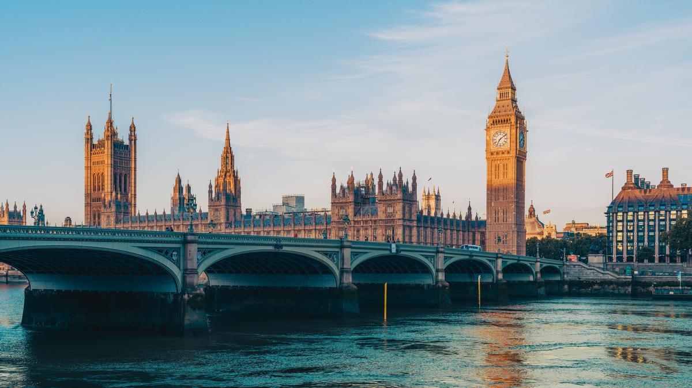
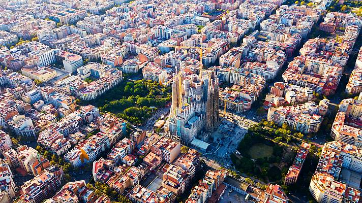
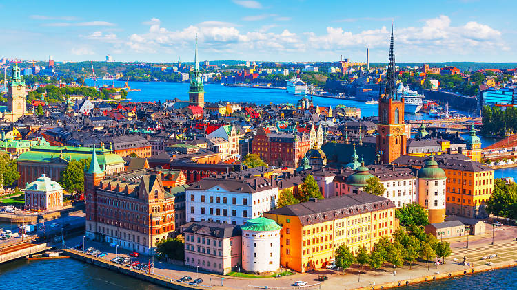

Un viatge per Londres
Londres és la capital i ciutat més poblada d'Anglaterra i del Regne Unit. La ciutat, situada a la riba del Tàmesi,
al sud-est de l'illa de Gran Bretanya, ha estat un nucli urbà important des de fa gairebé 2.000 anys, quan fou
fundada pels romans amb el nom de Londinium.

Barcelona és una ciutat i metròpoli a la costa mediterrània de la península Ibèrica. És la capital de Catalunya,
així com de la comarca del Barcelonès i de la província de Barcelona, i la segona ciutat en població i pes
econòmic de la península Ibèrica, després de Madrid.

Estocolm és la capital del Regne de Suècia i la més gran de les capitals escandinaves. La seva conurbació, a
cavall del llac Mälaren i el mar Bàltic, passa del milió d'habitants. La ciutat s'estén per un conjunt d'illes,
de les quals la més significativa és la que forma la Gamla Stan, o ciutat vella.